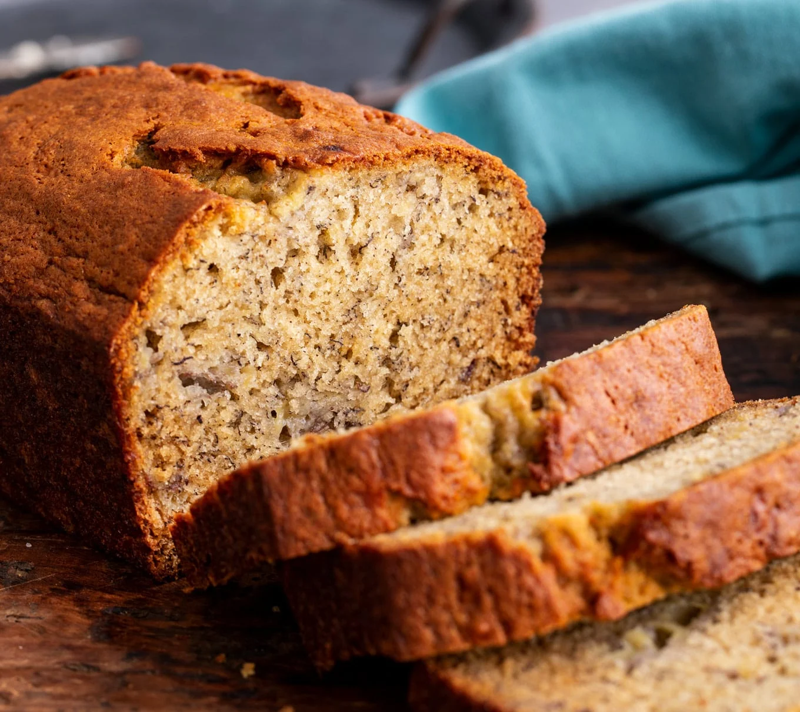

Banana Bread Recipe

About to throw out your overripe bananas? Stop! Make this super easy soft moist Banana Bread!
Ingredients
- 1 3/4 cups all-purpose flour (215g)
- 1 tsp baking soda (6g)
- 1 tsp salt (6g)
- 1/2 tsp ground cinnamon (3g)
- 3/4 cup brown/granulated sugar (150g)
- 1/2 cup unsalted butter room temperature (113g)
- 2 large eggs
- 3 very ripe bananas mashed (430g)
- 1 tsp vanilla (5ml)
- Preheat oven to 350F. Grease a 9×5-inch loaf pan with butter or baking spray.
- In a medium bowl, whisk together the flour, baking soda, salt, and cinnamon.
- In a large mixing bowl or the bowl of a stand mixer fitted with the paddle attachment, beat the sugar and butter together on high speed until light and fluffy, about 3 minutes.
- Beat in the eggs one at a time, stopping to scrape down the bowl between each. Beat in the vanilla extract. Mix the mashed bananas in and then add the dry ingredients and fold together until just combined.
- Pour the batter into the prepared loaf pan.
- Bake for 50 to 60 minutes or until a wooden pick inserted into the center comes out clean. Let cool in the pan for 20 minutes then remove and finish cooling on a wire rack.